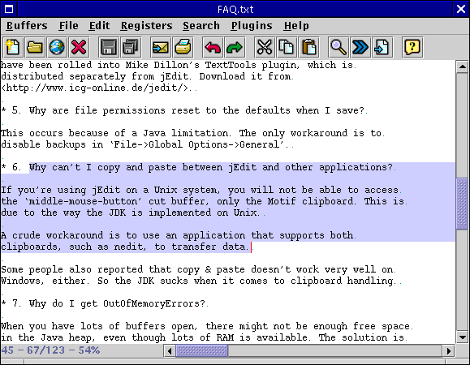

jEdit has various commands for manipulating arbitriary ranges of text. To specify a range of text for further manipulation, it must be selected. When a range of text is selected, it is drawn with a purple highlight (the color can be changed if you don't like it). Only one selection can exist at any one time.
The simplest way to make a selection is to drag the mouse from the start of the selection to the end. All text between the two locations will be marked. Also, Shift-clicking in a location in the buffer will create a selection from the caret position to where you clicked.
Holding down Shift in addition to a caret movement key (Left, Up, Home, etc) will extend the selection in the specified direction, instead of moving the caret. If no selection is active, one will be created.
Edit>Select All (keyboard equivalent: Control-A) selects the entire buffer.
Edit>Select None (keyboard equivalent: Escape) deactivates the selection, if there is one.
Figure 3-4. A selection
